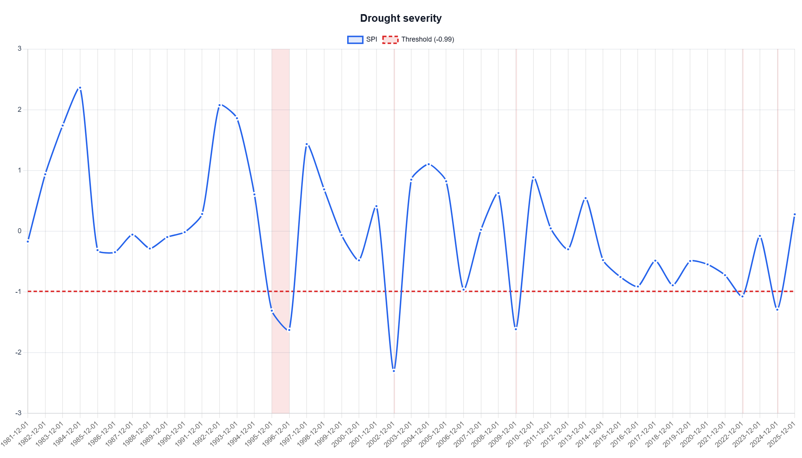
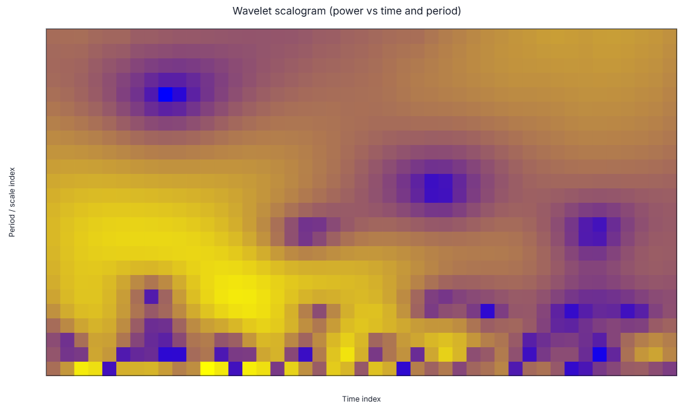

1. Analysis point and data context
| Field | Value |
|---|---|
| Location label | Yuma-area point |
| Coordinates | 32.6927, -114.6277 |
| Analysis period | 1981-01-01 to 2025-12-31 |
| Data source | NASA POWER |
| Drought index / time scale | SPI, yearly calendar-year aggregation |
| Baseline | Same as analysis period, 1981-2025 |
| Drought event threshold | SPI <= -0.99 |
| Category method | Classic SPI thresholds |
This document records the third analysis point for the DMAP-AI paper workflow. The comparison is written as a ChatGPT-based interpretation of two input modes: direct chart-only interpretation and interpretation using the DMAP-AI structured AI request exported with the selected chart.
Note: the periodicity ZIP for this location contains the wavelet scalogram request and chart. For a final dominant-periodicity table, the global wavelet spectrum export remains the preferred primary evidence source.
Back to top2. Part A - Drought severity interpretation
Selected chart: Drought severity - SPI line with shaded events.

2.1 Method 1: ChatGPT chart-only severity interpretation
From the chart alone, the SPI series shows several drought intervals below the red threshold line near -0.99. The most visually prominent drought occurs around 2002, where the SPI drops well below -2, indicating an extreme drought signal. A two-year shaded drought interval is visible around 1995-1996, and additional single-year droughts appear around 2009, 2022, and 2024.
The chart-only interpretation is useful for identifying the approximate timing of the strongest droughts and for recognizing that drought occurrence is episodic rather than continuous. However, the chart alone does not provide exact event magnitudes, exact minimum SPI values for each event, or a clear distinction between the worst event and the longest event without supporting table data.
2.2 Method 2: ChatGPT structured-request severity interpretation
Using the DMAP-AI structured severity request, the Yuma-area point has 5 drought events and six drought years under the threshold SPI <= -0.99. The SPI record ranges from a minimum of -2.302 to a maximum of 2.364, with mean SPI near zero (-0.001).
The most severe event occurred in 2002, with minimum SPI = -2.302 and magnitude = 1.312. This is classified as extreme drought and represents the strongest drought deficit in the record. The longest event occurred in 1995-1996, lasting two yearly time steps, with minimum SPI = -1.626 and magnitude = 0.954. This event was severe but was not the most extreme event. Other drought events were 2009, 2022, and 2024.
| Event | Period | Duration | Min SPI | Magnitude |
|---|---|---|---|---|
| 1 | 1995-1996 | 2 | -1.626 | 0.954 |
| 2 | 2002 | 1 | -2.302 | 1.312 |
| 3 | 2009 | 1 | -1.614 | 0.624 |
| 4 | 2022 | 1 | -1.074 | 0.084 |
| 5 | 2024 | 1 | -1.292 | 0.302 |
2.3 Severity method comparison
| Evaluation item | Chart-only ChatGPT | Structured-request ChatGPT | Improvement |
|---|---|---|---|
| Worst drought event | Identifies 2002 visually as the deepest negative SPI. | Confirms 2002 with SPI = -2.302 and magnitude = 1.312. | Structured request adds exact value and magnitude. |
| Persistence | Sees a longer shaded period around 1995-1996. | Confirms 1995-1996 as the longest event, lasting two yearly steps. | Structured request separates persistence from severity. |
| Event count | Approximate from shaded bands but not exact. | Reports five events and six drought years. | Structured request improves completeness. |
| Threshold/method | Threshold is visible but not fully contextualized. | States SPI <= -0.99 and Classic SPI thresholds. | Structured request improves reproducibility. |
| Hallucination risk | Low for severe drought timing, but may miss exact metrics. | Lower because numeric event fields are provided. | DMAP-AI reduces unsupported detail. |
3. Part B - Wavelet variability / periodicity interpretation
Selected chart: Wavelet scalogram - power versus time and period.

3.1 Method 1: ChatGPT chart-only wavelet interpretation
From the scalogram alone, the SPI variability appears to be distributed across several time-scale bands rather than concentrated in a single simple feature. Warm colors indicate stronger wavelet power, while cooler colors indicate weaker power. The chart suggests stronger variability at shorter-to-intermediate period bands and changes in power through time, but the image alone does not allow a precise dominant period to be read reliably because the vertical axis is shown as a scale/period index rather than exact numeric period labels for each row.
A chart-only interpretation could easily overstate the result by calling a visible power band a drought cycle. A safer chart-only conclusion is that the scalogram shows time-varying SPI variability, but exact dominant periodicity and reliability require the structured numeric output.
3.2 Method 2: ChatGPT structured-request wavelet interpretation
The DMAP-AI structured wavelet request identifies the highest-power and best reliable peak at approximately 7.39 yearly time steps, with global power = 1.542, coherence = 0.974, and reliability = 0.948. The nearby ranked periods at 6.48 and 8.30 years indicate a broader short-to-intermediate variability band around roughly 6-8 years, with additional weaker support extending toward about 9-10 years.
This should be interpreted as a diagnostic variability band, not as a deterministic drought recurrence cycle. The structured request is useful because it gives the numeric period, power, coherence, and reliability metrics, while also reminding the interpreter that wavelet power shows time-frequency variability rather than direct causality or prediction.
| Period (years) | Power | Coherence | Reliability | Caution |
|---|---|---|---|---|
| 7.39 | 1.542 | 0.974 | 0.948 | No extra caution. |
| 6.48 | 1.533 | 0.976 | 0.947 | No extra caution. |
| 8.30 | 1.446 | 0.975 | 0.891 | No extra caution. |
| 5.57 | 1.398 | 0.977 | 0.865 | No extra caution. |
| 1.00 | 1.398 | 0.974 | 0.859 | No extra caution. |
| 9.22 | 1.268 | 0.981 | 0.791 | No extra caution. |
3.3 Wavelet method comparison
| Evaluation item | Chart-only ChatGPT | Structured-request ChatGPT | Improvement |
|---|---|---|---|
| Dominant period | Cannot be read precisely from the scalogram alone. | Identifies highest-power/best reliable band at about 7.39 years. | Structured request adds numeric precision. |
| Variability band | Suggests time-varying power across period bands. | Supports a 6-8 year band, with nearby ranked periods at 6.48 and 8.30 years. | Structured request converts visual pattern into defensible summary. |
| Reliability | Not available from image alone. | Provides coherence = 0.974 and reliability = 0.948 for the top peak. | Structured request supports uncertainty discussion. |
| Overclaiming risk | May incorrectly call the pattern a fixed drought cycle. | Frames the result as a diagnostic variability band, not a forecast rule. | DMAP-AI reduces hallucination risk. |
| Limitations | Difficult to interpret exact timing and period without metadata. | Still based on scalogram/wavelet diagnostics; global spectrum is preferred for final dominant-periodicity comparison. | Structured request helps but does not replace expert method review. |
4. Research-use conclusion for this location
For the Yuma-area point, the severity comparison shows a common pattern for the DMAP-AI study: the chart-only method can identify obvious drought features, especially the extreme 2002 drought, but the structured request improves precision by adding exact SPI, duration, event count, and magnitude. The structured request also separates the worst drought from the longest drought, which is important for drought characterization.
For wavelet interpretation, the structured request provides a stronger improvement. The chart-only method can describe broad time-frequency variability, but it cannot reliably quantify the dominant period or reliability. DMAP-AI identifies a dominant diagnostic variability band near 7.39 years and provides coherence and reliability metrics, while discouraging deterministic drought-cycle claims. This supports the paper hypothesis that structured DMAP-AI requests are most valuable for reducing overinterpretation in periodicity analysis.
Recommended next export for final paper table: add the global wavelet spectrum chart/request for this point, so the dominant periodicity result can be compared consistently across all locations.
Prepared from DMAP-AI ZIP exports uploaded for the Yuma-area point: severity and wavelet scalogram analyses, 1981-2025.
Back to top